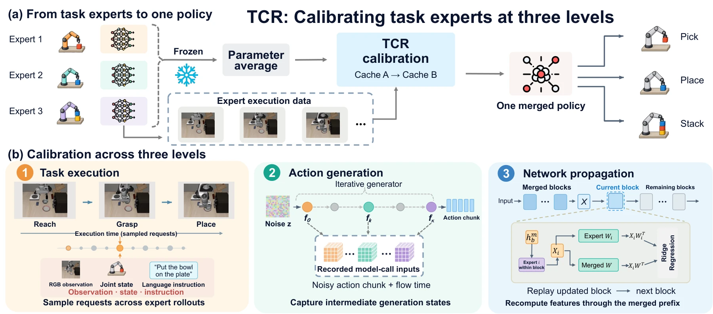
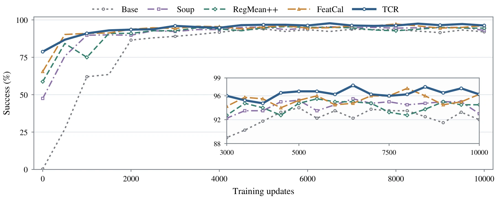
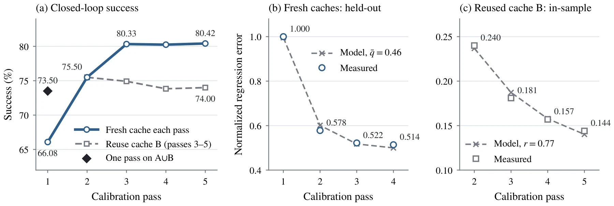
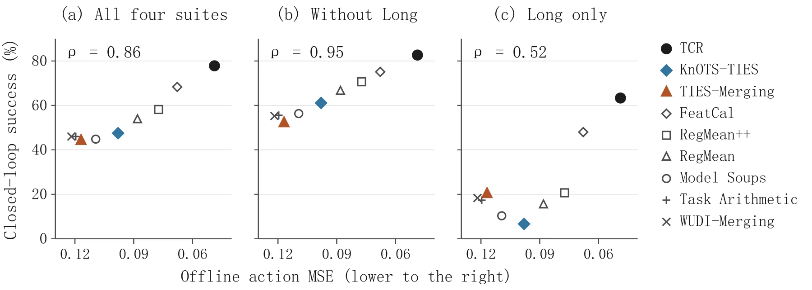

Overview of TCR. (a) Calibration starts from the parameter average of frozen task experts and uses separate rollout caches from the same experts, yielding one fixed policy. (b) Calibration covers task execution, intermediate calls of the action generator, and blockwise replay through the already merged network.
Robot foundation models are increasingly adapted into task specialists to expand their embodied capabilities. Yet these capabilities remain fragmented across separate policies, and existing model-merging methods do not reliably preserve them during closed-loop execution: parameter-space alignment provides only an indirect proxy for behavior, while regression may fail to preserve behavior at states not covered by its calibration inputs. We present Trajectory-Calibrated Merging (TCR), an execution-aware, gradient-free framework that consolidates robot specialists into a single policy.
Across two complementary timescales, TCR collects calibration inputs from expert rollouts spanning different stages of task execution and from intermediate states within iterative action generation. To account for representation shifts introduced by merging, TCR recomputes each block's input through the already merged blocks. It then uses each expert's computation within the block to form module inputs and fits merged weights to match the experts' linear outputs. A two-pass calibration procedure further refines the merged policy using separate rollout caches while retaining the frozen specialists as teachers.
The resulting model preserves the original inference graph and requires neither expert routing nor additional gradient training. On LIBERO, TCR merges four π0.5 specialists and achieves 77.83% success across 1,200 evaluation episodes, outperforming FeatCal, RegMean, and direct weight averaging by 9.50, 24.17, and 33.00 percentage points, respectively. Continued training from a merged checkpoint also improves peak success: TCR reaches 97.75% versus 94.00% when training from the common base.
TCR approximates functional merging by fitting each linear module of the merged policy to the experts' outputs. The inputs for this fit are recorded while the frozen experts execute their tasks, and the network is fitted block by block on features produced by the blocks that are already merged.
Given M experts πi = πΘi fine-tuned from the same initial model, we seek one policy that retains their skills without selecting an expert at inference. Matching expert outputs gives a general objective for functional merging, where μi is the input distribution on which expert i is matched:
The choice of μi is the central question. For a robot policy, the inputs met at deployment depend on the policy's own earlier actions and on the internal state of its action generator, so a fixed set of observations covers them poorly.
At request r, the input xr = (or, sr, ℓ) holds the observation, proprioceptive state and instruction. The expert's native generator produces an action chunk, and the environment returns the next input:
Requests are sampled throughout each expert's episodes, so later stages of a task are covered. Within a request, an iterative generator is called several times on the same observation; a calibration record therefore also stores the generator state ur,f (for π0.5, the noisy action chunk and flow time) and the call index f. Records are drawn from the uniform mixture over experts:
Blocks are visited in forward order. The input to block b, hbM, is recomputed through the blocks that are already merged, while the computations inside block b before module j follow expert i (φi,b,j). The regression rows are
After the block's modules are solved, the block is replayed to produce the inputs of the next block. Stored generator states and history stay fixed; nothing is regenerated by the merged policy.
For one linear module with expert weights Wi and prior P (the expert mean in the first pass, the previous checkpoint afterwards), TCR fits a correction that preserves expert outputs on Xi, with expert masses ωi summing to one:
The solution has the closed form
and the prior is kept in every direction the calibration features do not cover:
Expert masses in the first pass are inversely proportional to how far the prior already is from each expert, so a small expert-specific residual is not outweighed by a larger one:
Let S(Θ, D; rule) denote one blockwise pass with prior checkpoint Θ, cache D and weighting rule. With two caches collected from the same frozen experts,
Because the second pass uses Θ(1) as its prior, the passes are successive proximal updates rather than one pooled fit. In a simplified model with fixed features, two successive updates contract the initial error more than a single pass on the pooled caches. Only ΘTCR is deployed, with the original inference graph.
The video follows one recorded call through collection, replay, fitting and deployment, with narration and captions. Feature values and the two-dimensional regression example are schematic.
Four π0.5 specialists, one per LIBERO suite, merged into a single checkpoint. Mean ± s.d. over three 400-episode evaluations on a reset bank disjoint from calibration.
Hatched bars: the four specialists, each evaluated on its own suite (a reference, not a single policy). For TCR the three evaluations use three independently constructed models with separate calibration caches; for other methods they re-evaluate one checkpoint. Whiskers show ± one standard deviation.
| Method | Spatial | Object | Goal | Long | Average |
|---|
Episodes from the main evaluation in which TCR, the strongest baseline (FeatCal), weight averaging (Model Soups) and the suite expert start from the same simulator state with the same seed.
Unedited recordings; ✓ / ✗ come from the simulator's success check, and successful episodes end early and hold their last frame. These examples are illustrative and do not estimate success rates; see the results above for the full 1,200-episode evaluation.
The same recipe on perturbed LIBERO scenes and on a bimanual benchmark. Success (%); hatched bars are the specialists.

Continuing multi-task training from each merged checkpoint. TCR starts highest and reaches the best peak, 97.75% versus 94.00% from the common base.

Each pass starts from the previous checkpoint and fits on a newly collected cache. In this study, success rises from 75.50% after two passes to 80.33% after three and then levels off; reusing an old cache does not help.

On 400 held-out expert requests, lower action error goes with higher success across nine merging methods (Spearman ρ = 0.86), but the link weakens on long-horizon tasks, where one missed grasp ends the episode.
@misc{chen2026trajectorycalibratedmerging,
title = {Trajectory-Calibrated Merging of Embodied Policies},
author = {Wenshuo Chen and Honglei Jin and Le Yang and Jianfei Song and Shaofeng Liang and Lei Wang and Junze Zhu and Kailong Wang and Zhengxi Jin and Haozhe Jia and Honglin Chu and Songning Lai and Xiucheng Wang and Yutao Yue},
year = {2026},
eprint = {2611.25575},
archivePrefix = {arXiv},
primaryClass = {cs.RO},
url = {http://arxiv.org/abs/2611.25575}
}